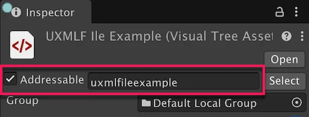

Load UI assets dynamically at runtime with Unity’s Addressable Asset System for efficient memory management and flexible asset organization.
This example shows how to load UI assets with the Addressables package. Addressables are the recommended way to reference UI assets at runtime for larger projects or when you need to manage your assets more efficiently.
In this example, you create a simple UXML file with a button, and a simple USS file that styles the button. You make both files addressable, and then load them at runtime in a MonoBehaviour script.
You can find the completed files that this example creates in this GitHub repository.
This guide is for developers familiar with the Unity Editor, UI Toolkit, and C# scripting. Before you start, get familiar with the following:
Create a UXML file with a button element and a USS file that styles the button with a green background.
Create a Unity project with any template.
Install the Addressables package if you haven’t already.
In the Project window, create a UXML file named UXMLExample.uxml and a USS file named USSExample.uss.
Open the UXMLExample.uxml file in the UI Builder and add a Button to the Hierarchy panel.
Save your changes.
Open the USSExample.uss file in a text editor and add the following content to style the button:
Button {
background-color: green;
}
Make the UXML and USS files addressable so that you can load them at runtime. When you make an asset addressable, Unity generates a default address key for the asset based on its name. This example sets a custom address key for the UXML file so that you can reference it in the C# scripts.
In the Project window, select the USSExample.uss file.
In the Inspector window, select Addressable.
Select the UXMLExample.uxml file.
In the Inspector window, select Addressable and enter uxmlexample as the address key for the UXML file.

Create a C# script to load the UXML by its address key and load the USS through its addressable asset reference.
In the Project window, create a C# script named AddressableExample.cs with the following content:
using UnityEngine;
using UnityEngine.AddressableAssets;
using UnityEngine.ResourceManagement.AsyncOperations;
using UnityEngine.UIElements;
// Manages dynamic loading and unloading of UI assets using Unity's Addressable Asset System.
// This script loads both VisualTreeAsset and StyleSheet assets at runtime and applies them to a PanelRenderer component,
// providing efficient memory management and asynchronous loading capabilities.
public class AddressableExample : MonoBehaviour
{
[SerializeField] private string uxmlAssetKey; // Addressable key for the UXML asset to load.
[SerializeField] private AssetReference ussAsset; // AssetReference for the USS asset to load.
private PanelRenderer panelRenderer;
private AsyncOperationHandle<VisualTreeAsset> uxmlLoadHandle;
private AsyncOperationHandle<StyleSheet> ussLoadHandle;
private VisualTreeAsset loadedAsset;
private StyleSheet loadedStyleSheet;
private void OnEnable()
{
panelRenderer = GetComponent<PanelRenderer>();
if (panelRenderer != null)
{
panelRenderer.RegisterUIReloadCallback(OnUIReload);
}
}
private void OnDisable()
{
if (panelRenderer != null)
{
panelRenderer.UnregisterUIReloadCallback(OnUIReload);
}
UnloadUIDocument();
}
// Callback method invoked when the PanelRenderer reloads the UI.
private void OnUIReload(PanelRenderer renderer, VisualElement rootElement)
{
// Load assets when UI is ready to receive them.
if (!uxmlLoadHandle.IsValid())
{
LoadUIDocument();
}
if (!ussLoadHandle.IsValid())
{
LoadStyleSheet();
}
// Apply stylesheet if already loaded; guard against adding the same sheet on every reload.
if (loadedStyleSheet != null && !rootElement.styleSheets.Contains(loadedStyleSheet))
{
rootElement.styleSheets.Add(loadedStyleSheet);
}
}
private void LoadUIDocument()
{
Debug.Log($"Loading {uxmlAssetKey}");
uxmlLoadHandle = Addressables.LoadAssetAsync<VisualTreeAsset>(uxmlAssetKey);
uxmlLoadHandle.Completed += UxmlHandle_Completed;
}
private void LoadStyleSheet()
{
if (ussAsset != null)
{
Debug.Log($"Loading {ussAsset.RuntimeKey}");
ussLoadHandle = Addressables.LoadAssetAsync<StyleSheet>(ussAsset);
ussLoadHandle.Completed += UssHandle_Completed;
}
else
{
Debug.LogWarning("USS AssetReference is null, skipping style sheet loading.");
}
}
private void UxmlHandle_Completed(AsyncOperationHandle<VisualTreeAsset> obj)
{
if (!isActiveAndEnabled || panelRenderer == null)
return;
if (obj.Status == AsyncOperationStatus.Succeeded)
{
loadedAsset = obj.Result;
panelRenderer.visualTreeAsset = loadedAsset;
}
else
{
Debug.LogError($"AssetKey {uxmlAssetKey} failed to load.");
}
}
private void UssHandle_Completed(AsyncOperationHandle<StyleSheet> obj)
{
if (!isActiveAndEnabled || panelRenderer == null)
return;
if (obj.Status == AsyncOperationStatus.Succeeded)
{
loadedStyleSheet = obj.Result;
}
else
{
Debug.LogError($"AssetReference {(ussAsset != null ? ussAsset.RuntimeKey : "(null)")} failed to load.");
}
}
private void UnloadUIDocument()
{
if (uxmlLoadHandle.IsValid())
{
Debug.Log($"Unloading {uxmlAssetKey}");
uxmlLoadHandle.Completed -= UxmlHandle_Completed;
loadedAsset = null;
Addressables.Release(uxmlLoadHandle);
uxmlLoadHandle = default;
}
if (ussLoadHandle.IsValid())
{
Debug.Log($"Unloading {(ussAsset != null ? ussAsset.RuntimeKey : "(null)")}");
ussLoadHandle.Completed -= UssHandle_Completed;
loadedStyleSheet = null;
Addressables.Release(ussLoadHandle);
ussLoadHandle = default;
}
}
private void OnDestroy()
{
// Clean up any remaining handles that weren't released in UnloadUIDocument.
if (uxmlLoadHandle.IsValid())
{
uxmlLoadHandle.Completed -= UxmlHandle_Completed;
Addressables.Release(uxmlLoadHandle);
uxmlLoadHandle = default;
}
if (ussLoadHandle.IsValid())
{
ussLoadHandle.Completed -= UssHandle_Completed;
Addressables.Release(ussLoadHandle);
ussLoadHandle = default;
}
}
}
To test the example, create a new scene and attach the script to a Panel Renderer GameObject.
AddressableExample script to the GameObject.uxmlexample in the Uxml Asset Key field and assign USSExample to the Uss Asset Reference field.After you enter Play mode, the Game view shows a button with a green background. This confirms that the script successfully loaded the UXML file and applied the styles from the USS file. The console also shows log messages to confirm that both assets were loaded successfully.